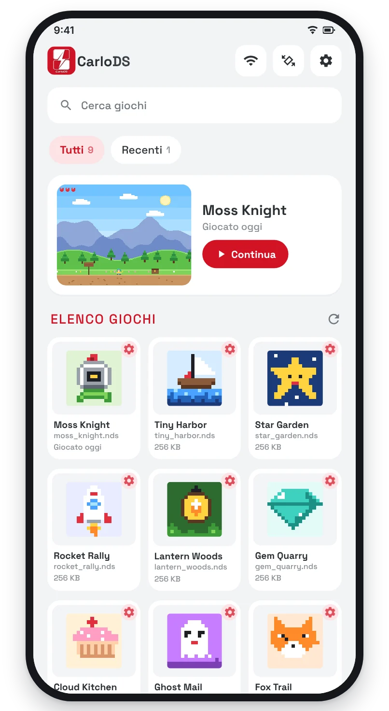
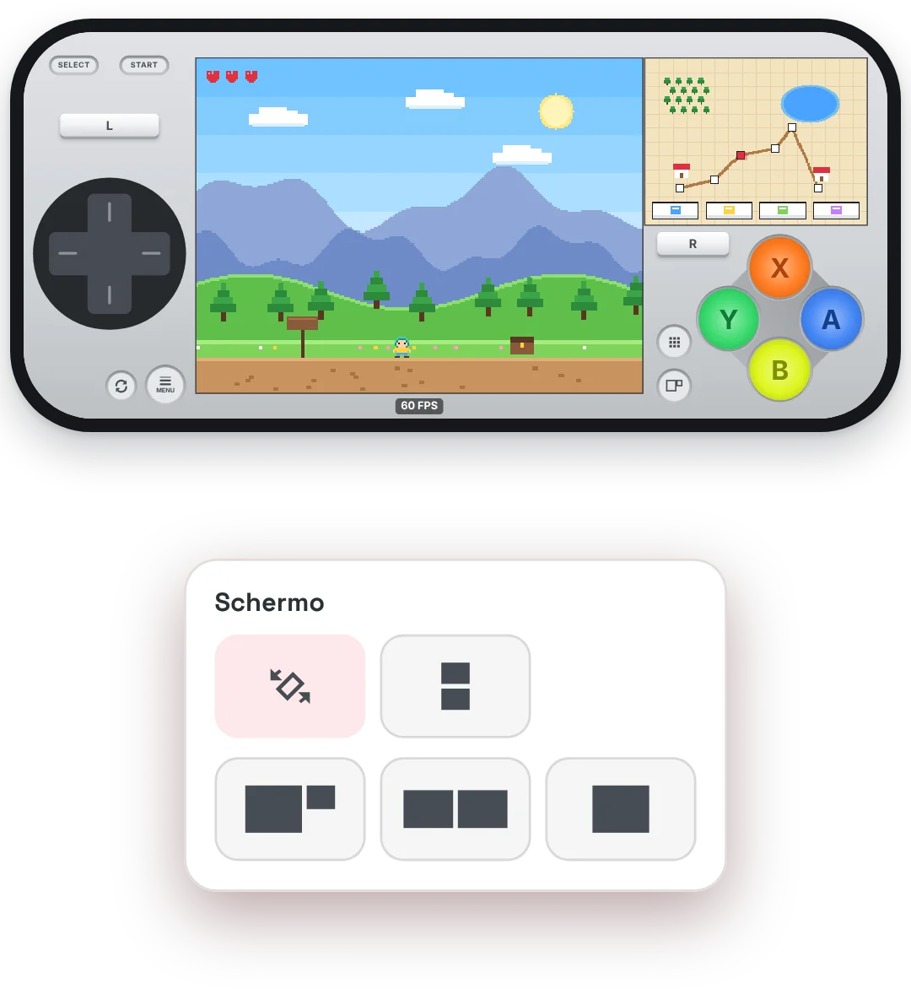
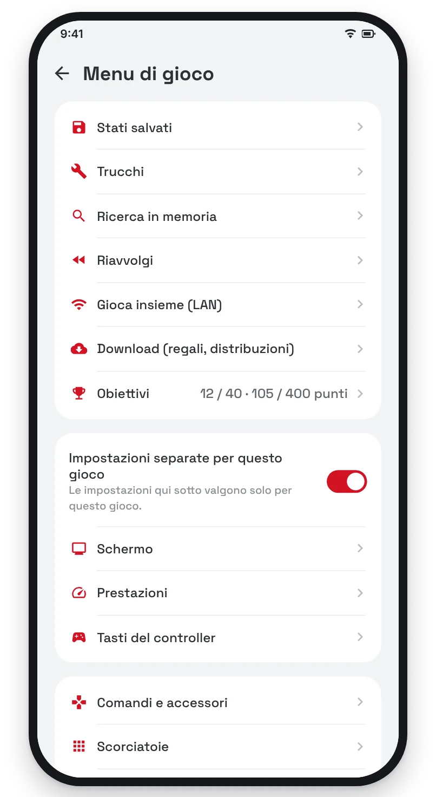
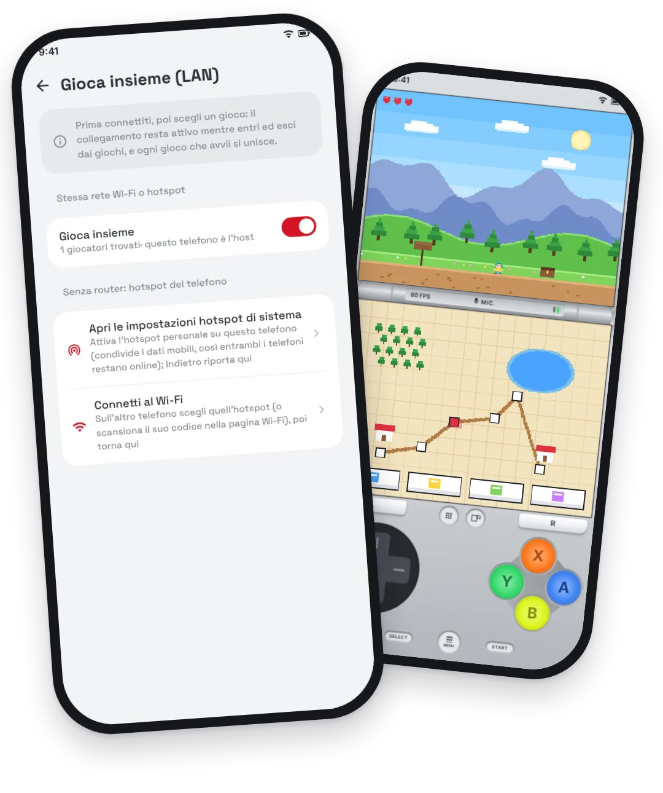
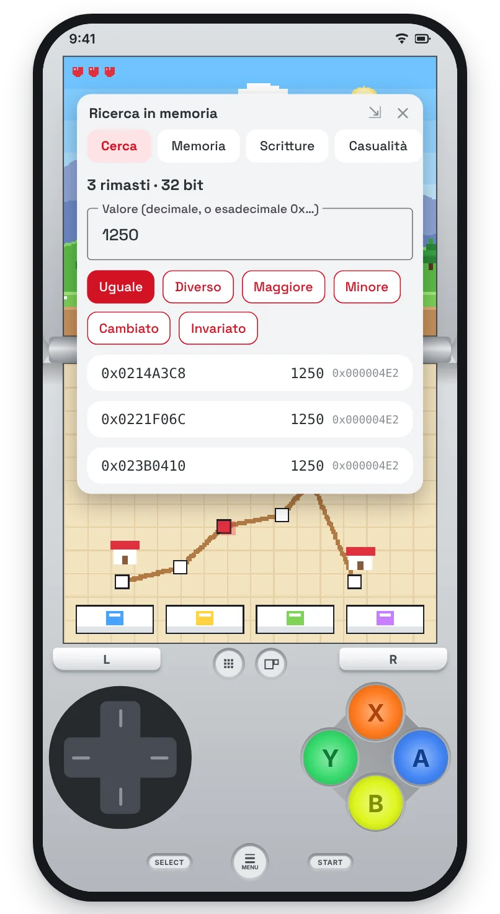
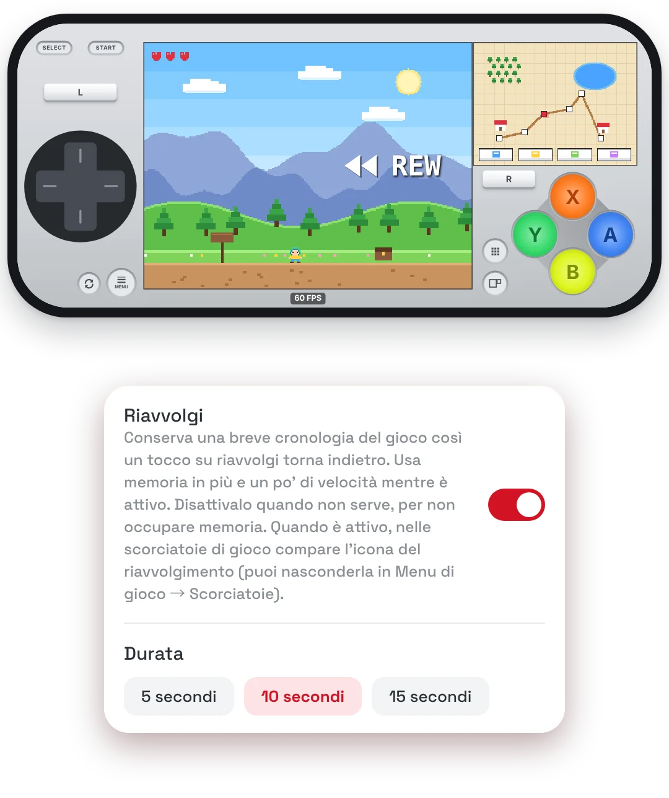

Emulatore NDS con core ad alta precisione: 3D HD, gioco locale, trucchi

Icone e titoli letti da ogni gioco. Riprendi da dove avevi lasciato.

CarloDS è un emulatore NDS per smartphone e tablet Android. Il core di emulazione – processori ARM9 e ARM7, grafica 2D e 3D, audio, wireless e BIOS integrato – si basava inizialmente sul progetto open source SkyEmu (licenza MIT); da allora è stato ampiamente riscritto ed esteso, ed è calibrato sulla console originale. La maggior parte dei giochi funziona senza file BIOS; il formato ZIP è supportato.
Impilati, grande + piccolo, affiancati o uno schermo.

Fascia bassa, media o alta con un tocco. 3D fino a 4×.

Stati di gioco, trucchi, riavvolgimento, wireless, download, obiettivi.

Niente router? Basta un hotspot del telefono.

Cerca valori in una finestra mobile mentre giochi.

Un tocco torna indietro di 5, 10 o 15 secondi.
